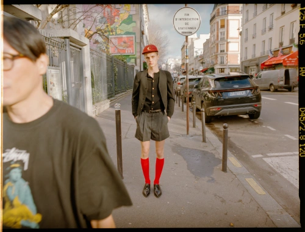

Paris-based makeup artist creating refined beauty with a modern, image-driven sensibility. Working across fashion, beauty and commercial projects, his approach combines precision, restraint and a strong understanding of how makeup functions within the broader visual narrative of an image.
SELECTED CLIENTS /
GIVENCHY BEAUTY / YSL BEAUTY / CLARINS / ADIDAS / DELVAUX / SWAROVSKI / ARTHUS BERTRAND / MORE OR LESS / BEAUTY PAPERS / MODERN WEEKLY CHINA / REPLICA MAN / 10 MAGAZINE / PORT MAGAZINE / OFFICE MAGAZINE / HUBE / VOGUE MEXICO / VOGUE ADRIA / VOGUE CZ /
